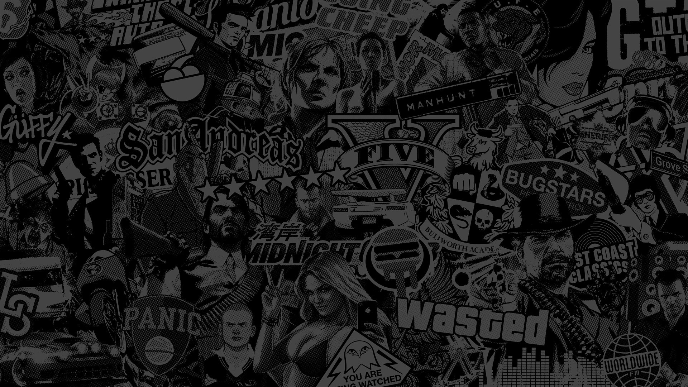

Acerca de Rockstar Games
Rockstar Games es una de las compañías más conocidas de la industria de los videojuegos. Fundada en 1998 y perteneciente a Take-Two Interactive, se ha hecho famosa por crear juegos con mundos abiertos enormes, historias interesantes y una gran cantidad de detalles. Sus videojuegos permiten explorar ciudades, conocer personajes y realizar actividades más allá de las misiones principales.

Franquicias más emblemáticas
Si hablamos de Rockstar Games, es difícil no pensar en Grand Theft Auto y Red Dead Redemption. Ambas sagas destacan por sus mundos abiertos, sus historias y la libertad que ofrecen a los jugadores. Sin embargo, Rockstar no se limita a estos dos nombres: también ha desarrollado juegos como Bully, Max Payne y L.A. Noire, cada uno con su propio estilo y ambientación.
¿Por qué Rockstar es tan popular?
Una de las razones por las que Rockstar Games tiene tantos seguidores es el nivel de detalle de sus videojuegos. Sus mundos están llenos de personajes, actividades, secretos y situaciones que hacen que explorarlos resulte interesante. Además, sus historias y personajes suelen dejar huella en los jugadores. Eso sí, sus juegos también generan debate y sus largos tiempos de desarrollo hacen que cada nuevo lanzamiento despierte muchísima expectación.
Y no, hoy no vamos a hablar de las polémicas laborales de Rockstar
Mi opinión sobre Rockstar Games
En mi opinión, Rockstar Games ha llegado a ser lo que es hoy gracias a su organización y a la enorme cantidad de detalles que incorpora en sus videojuegos.
Un buen ejemplo es Grand Theft Auto: San Andreas, que marcó un antes y un después en la historia de los videojuegos. Resulta impresionante pensar que Rockstar consiguió desarrollarlo en aproximadamente dos años después del lanzamiento de GTA: Vice City, creando un videojuego que ofrecía una enorme cantidad de posibilidades para los jugadores.
Otro ejemplo más reciente es Red Dead Redemption 2, que para mí es el mejor juego que ha desarrollado Rockstar y diría que también el mejor videojuego que he jugado y disfrutado. Aunque muchos juegos de mundo abierto se centran principalmente en la exploración, Red Dead Redemption 2 le da la misma importancia a la historia y a sus personajes.
Esto se puede ver en personajes tan emblemáticos como Arthur Morgan, John Marston, Dutch van der Linde y Micah Bell. La forma en la que están escritos y cómo evolucionan a medida que avanza la historia hace que acabes encariñándote con algunos y cogiendo manía a otros. De hecho, Micah está tan bien interpretado que acabas odiándolo de lo bien que está hecho el personaje.
Otra cosa que me encanta es la dinámica de la banda y cómo van cambiando las relaciones entre sus integrantes a lo largo de la historia. Todo esto hace que los personajes se sientan más reales y que te importe lo que les ocurre.
Es cierto que hay opiniones divididas sobre Red Dead Redemption 2, ya que algunos jugadores consideran que su ritmo es demasiado lento y terminan dejándolo. Para mí es un juegazo, aunque respeto su opinión equivocada.
En definitiva, creo que Rockstar Games se toma muy en serio el desarrollo de sus videojuegos. Su atención al detalle, sus historias y sus personajes son algunas de las razones por las que tantos jugadores esperamos con ganas sus próximos lanzamientos.